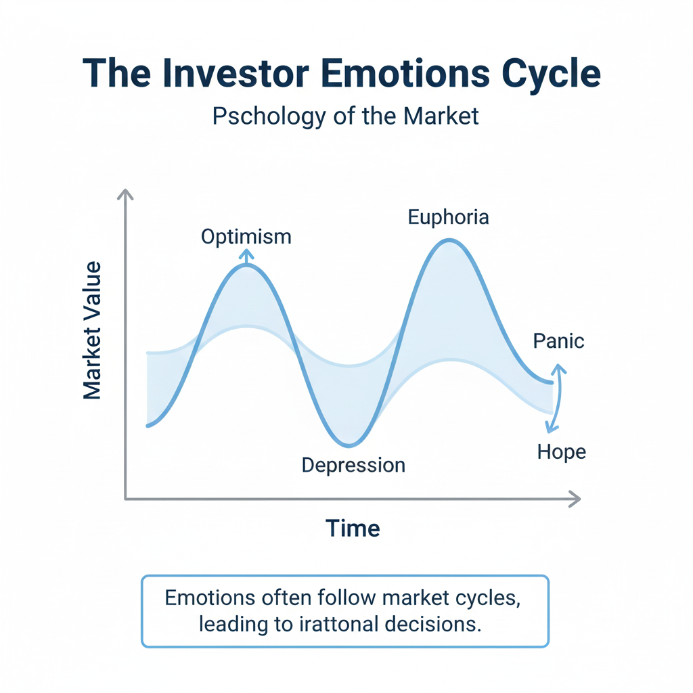
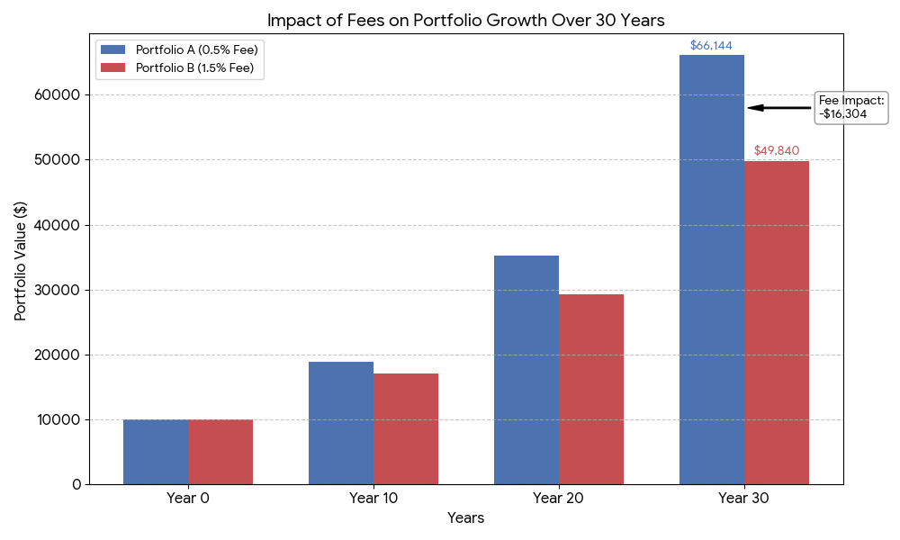
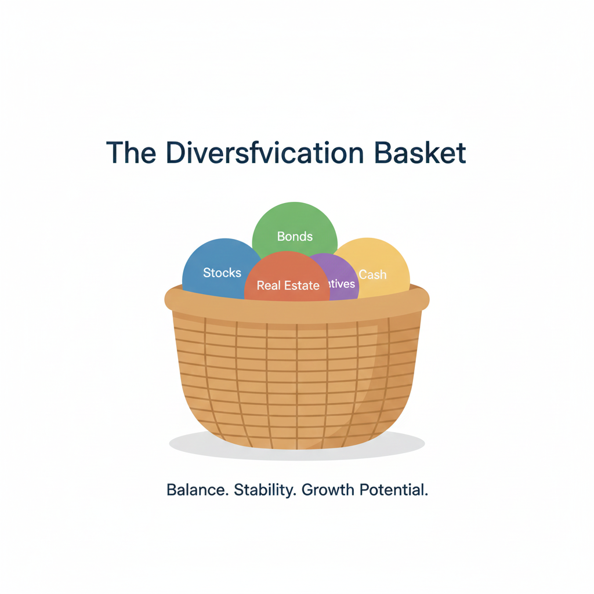

Most experienced investors will tell you that their greatest lessons came not from their successes, but from the errors they made early in their journeys. While making mistakes is a natural part of the learning process, the goal of a responsible learner is to avoid the "expensive" mistakes that can lead to permanent loss of capital. By identifying these errors before they happen, you can build a more resilient portfolio.
Understanding these behaviors is not about achieving perfect performance; it is about developing a sound strategy that prioritizes consistency and risk management over short-term speculation. In the following sections, we will break down the psychological and technical hurdles that every new investor must learn to navigate.
Table of Contents
Investing Without a Defined Strategy
One of the most common errors beginners make is entering the market without a clear objective. Many start by simply "buying a stock" because they heard it was a good company, without considering how that purchase fits into their broader financial picture. Without a plan, an investor has no roadmap to follow when the market becomes volatile.
Defining Your Time Horizon
A strategy begins with understanding your time horizon—the length of time you expect to hold an investment before needing the money. An investor saving for a house in three years should have a very different approach than an investor saving for retirement in thirty years. Beginners often make the mistake of choosing high-risk assets for short-term goals, which can be disastrous if the market dips just as they need to withdraw their funds.
Setting Realistic Expectations
Another facet of a plan is setting realistic expectations for returns. New investors are often lured by stories of assets doubling in value overnight. While this can happen, it is the exception rather than the rule. A successful long-term strategy is usually built on the power of compounding modest, consistent returns over many years rather than chasing "get rich quick" opportunities.
Understanding your objectives is a core part of Risk Management Fundamentals, which helps protect your capital during market shifts.
The Danger of FOMO and Herd Mentality
FOMO, or the "Fear of Missing Out," is a powerful psychological driver that causes investors to buy into an asset simply because the price is rising and everyone else seems to be making money. This herd mentality often leads people to buy at the peak of a cycle, just before a correction occurs.
The Greater Fool Theory
In many cases of FOMO-driven bubbles, investors stop looking at the actual value of what they are buying. They rely on the "Greater Fool Theory"—the idea that no matter how high the price is, there will always be someone else willing to buy it for even more. When the pool of buyers eventually runs out, the price crashes, leaving the most recent entrants with significant losses.
Emotional Reactivity and Panic Selling
The stock market does not move in a straight line; it is characterized by "volatility," or frequent price fluctuations. Beginners often struggle with the emotional weight of seeing their portfolio value drop in the short term. This often leads to panic selling—selling an asset at a low price out of fear that it will continue to drop.
Check Your Risk Tolerance
If a 10% drop in your portfolio causes you significant stress, it is a sign that your asset allocation is too aggressive for your personal risk tolerance. Aligning your investments with your ability to handle emotional stress is vital for long-term success. You can learn more about this in our guide to Stock Market Basics.
Neglecting the Impact of Fees and Taxes
Many beginners overlook the small percentages associated with trading commissions, expense ratios in ETFs, or management fees. While 1% might seem negligible today, these costs are compounded over decades. These fees act as a "drag" on your portfolio's growth.
Expense Ratios
When choosing index funds or ETFs, it is crucial to look at the "expense ratio." Two funds might track the exact same index—like the S&P 500—but one might charge five times as much as the other. Our article on Indexes Explained provides more detail on how to choose cost-effective benchmarks.
The Futility of Market Timing
"Market timing" is the act of trying to predict when the market will hit a bottom or a peak. Even professional investors struggle to do this consistently. For beginners, attempting to time the market is often a recipe for underperformance.
There is a famous saying: "Time in the market beats timing the market." Historical data shows that missing just a few of the market's "best days" can significantly lower your total return. A common way to avoid the stress of market timing is "Dollar-Cost Averaging" (DCA)—investing a fixed amount at regular intervals regardless of the price.
Inadequate Diversification vs. Over-Diversification
Inadequate diversification happens when an investor puts all their money into one or two stocks or a single sector (concentration risk). However, "over-diversification" can occur when an investor buys dozens of different funds that they haven't researched, leading to "diworsification" and excessive fees.
To see how different asset classes interact, you can read our comparison of Bitcoin vs Ethereum.
Ignoring Research and Fundamental Analysis
In the digital age, it is common for beginners to buy a stock based on a recommendation from an influencer. This is "blind investing." Without conducting your own due diligence, you are essentially gambling on someone else's opinion. Fundamental analysis involves looking at the underlying health of a company—its revenue, debt levels, and profit margins—before committing capital.
Key Takeaways
- Have a Plan: Define your goals and time horizon before investing.
- Control Your Emotions: Recognize that volatility is normal; avoid panic selling.
- Avoid FOMO: Don't buy an asset just because the price is rising; focus on value.
- Watch Your Costs: Small fees add up over time and erode your wealth.
- Be Patient: Focus on "time in the market" rather than trying to time the "dips."
- Do Your Research: Never invest in something you don't understand just because of a tip.
Conclusion
Investing is a marathon, not a sprint. The journey is rarely a smooth path, and every investor faces challenges along the way. The key to navigating the market successfully as a beginner is not to avoid mistakes entirely, but to ensure that the mistakes you do make are small enough to learn from without derailing your financial future.
By focusing on fundamentals, managing your emotional responses, and staying disciplined with a long-term plan, you can avoid the most common errors that trap novice investors. Remember that the most successful participants in the market are often those who are the most patient and the most prepared. As you continue your education, prioritize consistency and research over excitement and speculation.
Educational Disclaimer:
This article is for educational and informational purposes only and should not be considered financial or investment advice. Investing involves risk.